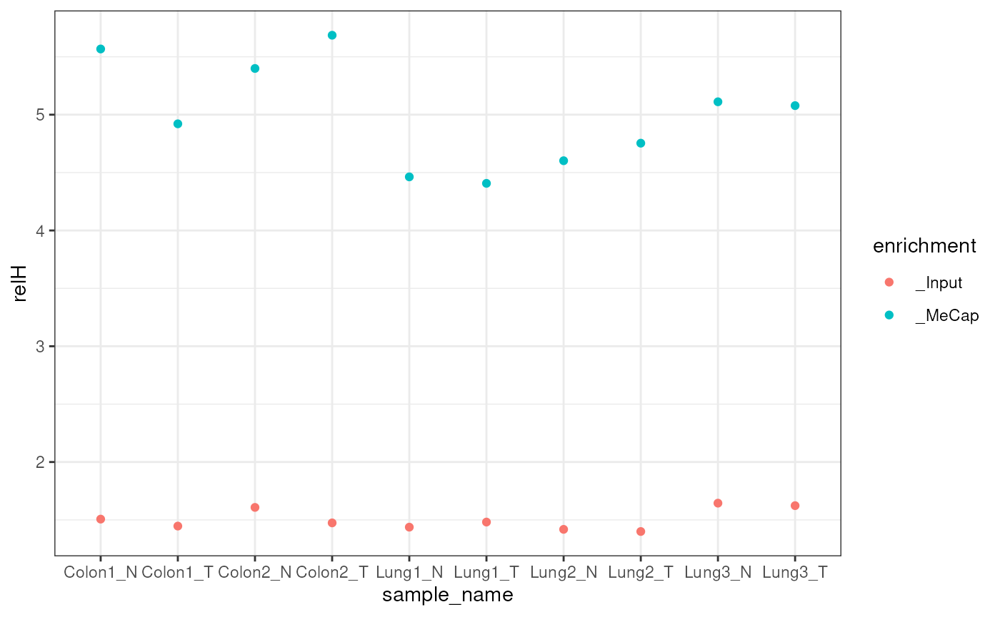

library(mesa)
#> Loading required package: qsea
#> Loading required package: dplyr
#>
#> Attaching package: 'dplyr'
#> The following objects are masked from 'package:stats':
#>
#> filter, lag
#> The following objects are masked from 'package:base':
#>
#> intersect, setdiff, setequal, union
#>
#> Attaching package: 'mesa'
#> The following object is masked from 'package:qsea':
#>
#> getPCA
library(dplyr)
library(ggplot2)
library(tidyr)
library(stringr)QSEA has several different types of values that can be returned per
window. You can get a table of raw counts per window with
getCountTable:
exampleTumourNormal %>%
getCountTable()
#> Generating table of counts values for 819 regions across 10 samples.
#> # A tibble: 819 × 14
#> seqnames start end CpG_density Colon1_N Colon1_T Colon2_N Colon2_T
#> <fct> <int> <int> <dbl> <dbl> <dbl> <dbl> <dbl>
#> 1 7 25002001 25002300 5.51 0 1 1 1
#> 2 7 25005001 25005300 13.4 1 0 0 0
#> 3 7 25008601 25008900 5.57 0 0 0 1
#> 4 7 25011301 25011600 5.10 0 1 0 1
#> 5 7 25017601 25017900 8.38 0 0 18 14
#> 6 7 25017901 25018200 17.9 0 4 11 18
#> 7 7 25018201 25018500 16.5 1 0 4 4
#> 8 7 25018501 25018800 17.5 0 0 1 0
#> 9 7 25018801 25019100 15.3 1 0 2 3
#> 10 7 25019101 25019400 18.2 3 2 9 4
#> # ℹ 809 more rows
#> # ℹ 6 more variables: Lung1_N <dbl>, Lung1_T <dbl>, Lung2_N <dbl>,
#> # Lung2_T <dbl>, Lung3_N <dbl>, Lung3_T <dbl>but this is not particularly useful, as different samples generally
have been sequenced to different read depths. We note that the
annotation of the qseaSet regions are included in this
output, especially the CpG_density that is described in
vignette("Generation of qseaSets").
The next option is normalised reads per million (NRPM). This normalises the number of reads by the depth of sequencing, as well as copy number variation.
exampleTumourNormal %>%
getNRPMTable()
#> Generating table of nrpm values for 819 regions across 10 samples.
#> Loading required namespace: GenomeInfoDb
#> # A tibble: 819 × 14
#> seqnames start end CpG_density Colon1_N Colon1_T Colon2_N Colon2_T
#> <fct> <int> <int> <dbl> <dbl> <dbl> <dbl> <dbl>
#> 1 7 25002001 25002300 5.51 0 0.131 0.246 0.178
#> 2 7 25005001 25005300 13.4 0.263 0 0 0
#> 3 7 25008601 25008900 5.57 0 0 0 0.178
#> 4 7 25011301 25011600 5.10 0 0.131 0 0.178
#> 5 7 25017601 25017900 8.38 0 0 4.42 2.50
#> 6 7 25017901 25018200 17.9 0 0.523 2.70 3.21
#> 7 7 25018201 25018500 16.5 0.263 0 0.983 0.713
#> 8 7 25018501 25018800 17.5 0 0 0.246 0
#> 9 7 25018801 25019100 15.3 0.263 0 0.491 0.535
#> 10 7 25019101 25019400 18.2 0.788 0.262 2.21 0.713
#> # ℹ 809 more rows
#> # ℹ 6 more variables: Lung1_N <dbl>, Lung1_T <dbl>, Lung2_N <dbl>,
#> # Lung2_T <dbl>, Lung3_N <dbl>, Lung3_T <dbl>Finally, we can request beta values. Beta values are measures of methylation, scaled to lie between 0 and 1, where 0 means that the window is unmethylated and 1 is methylated. These are scaled with respect to a further number of metrics, including region CpG_density, background noise and the sample enrichment profile, and are therefore the most useful value to consider when comparing methylation between samples.
exampleTumourNormal %>%
getBetaTable()
#> Generating table of beta values for 819 regions across 10 samples.
#> # A tibble: 819 × 14
#> seqnames start end CpG_density Colon1_N Colon1_T Colon2_N Colon2_T
#> <fct> <int> <int> <dbl> <dbl> <dbl> <dbl> <dbl>
#> 1 7 25002001 25002300 5.51 NA 0.347 NA 0.369
#> 2 7 25005001 25005300 13.4 0.0565 0.0171 0.0275 0.0165
#> 3 7 25008601 25008900 5.57 NA 0.204 NA 0.363
#> 4 7 25011301 25011600 5.10 NA 0.382 NA 0.406
#> 5 7 25017601 25017900 8.38 0.122 0.0695 0.918 0.818
#> 6 7 25017901 25018200 17.9 0.0240 0.0660 0.265 0.250
#> 7 7 25018201 25018500 16.5 0.0472 0.0143 0.112 0.0669
#> 8 7 25018501 25018800 17.5 0.0241 0.0140 0.0426 0.0133
#> 9 7 25018801 25019100 15.3 0.0493 0.0149 0.0692 0.0559
#> 10 7 25019101 25019400 18.2 0.0932 0.0380 0.220 0.0646
#> # ℹ 809 more rows
#> # ℹ 6 more variables: Lung1_N <dbl>, Lung1_T <dbl>, Lung2_N <dbl>,
#> # Lung2_T <dbl>, Lung3_N <dbl>, Lung3_T <dbl>Note that for some windows an NA value will be returned. This occurs when less than three reads would be required for the window to be fully methylated, at the read depth and enrichment profile calculated per sample. These occur particularly at windows with low CpG_density.
All three of these functions take an option
useGroupMeans that determine whether to average over the
group column of the qseaSet sampleTable, which
can be useful when you have biological or technical replicates for
example.
The example qseaSet has group as the same as sample_name, so we need to change that to see the effect:
exampleTumourNormal %>%
getBetaTable(useGroupMeans = FALSE)
#> Generating table of beta values for 819 regions across 10 samples.
#> # A tibble: 819 × 14
#> seqnames start end CpG_density Colon1_N Colon1_T Colon2_N Colon2_T
#> <fct> <int> <int> <dbl> <dbl> <dbl> <dbl> <dbl>
#> 1 7 25002001 25002300 5.51 NA 0.347 NA 0.369
#> 2 7 25005001 25005300 13.4 0.0565 0.0171 0.0275 0.0165
#> 3 7 25008601 25008900 5.57 NA 0.204 NA 0.363
#> 4 7 25011301 25011600 5.10 NA 0.382 NA 0.406
#> 5 7 25017601 25017900 8.38 0.122 0.0695 0.918 0.818
#> 6 7 25017901 25018200 17.9 0.0240 0.0660 0.265 0.250
#> 7 7 25018201 25018500 16.5 0.0472 0.0143 0.112 0.0669
#> 8 7 25018501 25018800 17.5 0.0241 0.0140 0.0426 0.0133
#> 9 7 25018801 25019100 15.3 0.0493 0.0149 0.0692 0.0559
#> 10 7 25019101 25019400 18.2 0.0932 0.0380 0.220 0.0646
#> # ℹ 809 more rows
#> # ℹ 6 more variables: Lung1_N <dbl>, Lung1_T <dbl>, Lung2_N <dbl>,
#> # Lung2_T <dbl>, Lung3_N <dbl>, Lung3_T <dbl>
exampleTumourNormal %>%
mutate(group = str_remove(sample_name,"\\d")) %>%
getBetaTable(useGroupMeans = TRUE)
#> Generating table of beta values for 819 regions across 4 sample groups.
#> # A tibble: 819 × 8
#> seqnames start end CpG_density Colon_N Colon_T Lung_N Lung_T
#> <fct> <int> <int> <dbl> <dbl> <dbl> <dbl> <dbl>
#> 1 7 25002001 25002300 5.51 NaN 0.358 0.372 0.222
#> 2 7 25005001 25005300 13.4 0.0420 0.0168 0.0404 0.0748
#> 3 7 25008601 25008900 5.57 NaN 0.284 0.263 0.303
#> 4 7 25011301 25011600 5.10 NaN 0.394 0.373 0.416
#> 5 7 25017601 25017900 8.38 0.520 0.444 0.877 0.721
#> 6 7 25017901 25018200 17.9 0.145 0.158 0.180 0.123
#> 7 7 25018201 25018500 16.5 0.0797 0.0406 0.0588 0.0659
#> 8 7 25018501 25018800 17.5 0.0334 0.0137 0.0262 0.0293
#> 9 7 25018801 25019100 15.3 0.0592 0.0354 0.0940 0.113
#> 10 7 25019101 25019400 18.2 0.156 0.0513 0.0753 0.0693
#> # ℹ 809 more rowsNow this table only has two columns (and note that there are no NA values any more due to the increased coverage).
We explicitly note that qsea incorporates the uncertainty of the
measurements in its beta value estimations. This means that the values
returned as beta values are actually the median of this
estimate, with an associated confidence interval (which can be queried,
see qsea::makeTable). In practice, this means that samples
with high coverage can return values very close to 0 and 1, but the same
sample with less coverage might return 0.1 or 0.9. This can have an
effect on clustering and PCAs for example.
One extremely important aspect of any sequencing experiment is quality control (QC), and ME-seq is no exception. Alongside the typical QC steps on the bam files themselves (although a raised CG content should obviously be expected following enrichment), there are several methylation-specific steps to consider.
The first metric that we use is a relative enrichment metric, known
as relH. This was first introduced in the
MEDIPs package, via the MEDIPS.CpGenrich()
function, and is a metric to express the proportion of CG dinucleotides,
compared to the reference genome. The relative enrichment
relH is calculated in the following way: * For each mapped
DNA fragment, retrieve the end-to-end DNA spanned on the reference
sequence. This is used instead of the reads themselves, as a fragment
will often be longer than the read(s) sequenced at its ends, and may
therefore contain CGs not covered by the reads. * In these sequences,
count how many CGs are present in total, and divide by the total number
of base pairs covered. * Divide by the same ratio, calculated for the
entire genome.
This is therefore a measure of how many more CGs are present in the fragments covered within the bam file, compared to the reference genome.
Within mesa, this metric is calculated through
makeQset, as part of the information added to the
libraries table on the qseaSet. For the
MBD-Seq data that we have studied, we apply a minimum relH
of 2.5, with 3 as a higher cutoff. This value is typically around 4-5 in
many of our studies.
We can use the addLibraryInformation function to add the
information in the libraries table directly onto the
sampleTable:
exampleTumourNormal %>%
addLibraryInformation() %>%
getSampleTable() %>%
dplyr::select(sample_name, relH)
#> sample_name relH
#> Colon1_N Colon1_N 5.567633
#> Colon1_T Colon1_T 4.921130
#> Colon2_N Colon2_N 5.399262
#> Colon2_T Colon2_T 5.686246
#> Lung1_N Lung1_N 4.463002
#> Lung1_T Lung1_T 4.406991
#> Lung2_N Lung2_N 4.602440
#> Lung2_T Lung2_T 4.753918
#> Lung3_N Lung3_N 5.111422
#> Lung3_T Lung3_T 5.078306When a non-enriched (“Input”) sample is used to calculate copy number
variation, an equivalent calculation is also performed on these
non-enriched fragments. This is also stored in the
libraries table, in columns starting with
input:
exampleTumourNormal %>%
addLibraryInformation() %>%
getSampleTable() %>%
dplyr::select(sample_name, input_relH)
#> sample_name input_relH
#> Colon1_N Colon1_N 1.506917
#> Colon1_T Colon1_T 1.446767
#> Colon2_N Colon2_N 1.608130
#> Colon2_T Colon2_T 1.474401
#> Lung1_N Lung1_N 1.437550
#> Lung1_T Lung1_T 1.481526
#> Lung2_N Lung2_N 1.418541
#> Lung2_T Lung2_T 1.400016
#> Lung3_N Lung3_N 1.644814
#> Lung3_T Lung3_T 1.623274We typically see values of the input_relH between
1.3-1.6, suggesting that there are more CGs seen in the sequenced
fragments than would be expected from the genomic sequence. This is
presumably due to the evolutionary suppression of CG
dinucleotides outside of specific contexts, meaning they are less common
in those areas of the genome that are repetitive and hence less easy to
map. This is likely to be dependent on the particular sequencing methods
and the sample type under consideration. We therefore need to see an
increase between the enriched and non-enriched data:
exampleTumourNormal %>%
addLibraryInformation() %>%
getSampleTable() %>%
dplyr::select(sample_name, relH_MeCap = relH, relH_Input = input_relH) %>%
pivot_longer(matches("relH"),
names_prefix = "relH",
names_to = "enrichment",
values_to = "relH") %>%
ggplot(aes(x = sample_name, y = relH, col = enrichment)) +
geom_point() +
theme_bw()
There is a second relative enrichment metric defined by the
MEDIPs package, known as GoGe, that is also
calculated globally in a similar way but considers the ratio between the
number of CGs present in the fragments compared to the
number of Cs and Gs independently. This is
calculated and stored in the libraries information
alongside the relH metric.
The libraries tab also calculates how many fragments do
not contain a CG at all. This can be measure of background noise.
The other metric that we typically use for quality control is to
consider windows that are known to be commonly methylated across a range
of tissues and diseases. For instance, for the human genome, [Edgar et
al (2014)]((https://pubmed.ncbi.nlm.nih.gov/25493099/) identified
probes from the Illumina 450k methylation array that were consistently
methylated in over 1000 samples. We therefore take the windows covered
by these probes, and calculate beta values for them, followed by
determining how many of these windows have a calculated beta value above
a threshold (e.g. 0.8). As noted above, beta values will not be
calculated if a sample does not have sufficient coverage and/or
enrichment, meaning this metric incorporates both the coverage depth as
well as how well the enrichment has worked. For our samples within the
National Biomarker Centre, we currently require at least 40% of the
hyperstable windows with a CpG_density above 5 to have a
beta value above 0.8. Samples with lower enrichment scores (as described
by the relH score) require a greater coverage depth to
reach this threshold.
For hg38, these hyper-stable methylated probes are incorporated in a
data object hg38UltraStableProbes, and a function
addHyperStableFraction is provided to calculate this and
add as a column, hyperStableEdgar, to the sampleTable for
filtering. Note that this will not work with the provided example data,
as there is no overlap with the windows in the example dataset
(i.e. filterByOverlaps(exampleTumourNormal,hg38UltraStableProbes)
has no windows).
We find that these three metrics, valid_fragments,
relH and hyperStableEdgar are the most
important considerations. For 300bp windows on the human genome, with
T7-MBD-seq, we require a relH of at least 2.5 and
hyperStableEdgar value of at least 0.4 (40%). We may also
apply a valid_fragments cutoff of 3000000, although most
samples which pass the other two metrics will achieve this anyway.
#> R version 4.5.2 (2025-10-31)
#> Platform: x86_64-pc-linux-gnu
#> Running under: Ubuntu 24.04.3 LTS
#>
#> Matrix products: default
#> BLAS: /usr/lib/x86_64-linux-gnu/openblas-pthread/libblas.so.3
#> LAPACK: /usr/lib/x86_64-linux-gnu/openblas-pthread/libopenblasp-r0.3.26.so; LAPACK version 3.12.0
#>
#> locale:
#> [1] LC_CTYPE=en_US.UTF-8 LC_NUMERIC=C
#> [3] LC_TIME=en_US.UTF-8 LC_COLLATE=en_US.UTF-8
#> [5] LC_MONETARY=en_US.UTF-8 LC_MESSAGES=en_US.UTF-8
#> [7] LC_PAPER=en_US.UTF-8 LC_NAME=C
#> [9] LC_ADDRESS=C LC_TELEPHONE=C
#> [11] LC_MEASUREMENT=en_US.UTF-8 LC_IDENTIFICATION=C
#>
#> time zone: UTC
#> tzcode source: system (glibc)
#>
#> attached base packages:
#> [1] stats graphics grDevices utils datasets methods base
#>
#> other attached packages:
#> [1] stringr_1.6.0 tidyr_1.3.2 ggplot2_4.0.2 mesa_0.99.0 dplyr_1.2.0
#> [6] qsea_1.36.0
#>
#> loaded via a namespace (and not attached):
#> [1] tidyselect_1.2.1 farver_2.1.2
#> [3] Biostrings_2.78.0 S7_0.2.1
#> [5] bitops_1.0-9 fastmap_1.2.0
#> [7] RCurl_1.98-1.18 GenomicAlignments_1.46.0
#> [9] XML_3.99-0.23 digest_0.6.39
#> [11] lifecycle_1.0.5 statmod_1.5.1
#> [13] magrittr_2.0.4 compiler_4.5.2
#> [15] rlang_1.1.7 sass_0.4.10
#> [17] tools_4.5.2 utf8_1.2.6
#> [19] yaml_2.3.12 data.table_1.18.2.1
#> [21] rtracklayer_1.70.1 knitr_1.51
#> [23] labeling_0.4.3 S4Arrays_1.10.1
#> [25] htmlwidgets_1.6.4 curl_7.0.0
#> [27] DelayedArray_0.36.0 RColorBrewer_1.1-3
#> [29] abind_1.4-8 BiocParallel_1.44.0
#> [31] HMMcopy_1.52.0 withr_3.0.2
#> [33] purrr_1.2.1 BiocGenerics_0.56.0
#> [35] desc_1.4.3 grid_4.5.2
#> [37] stats4_4.5.2 scales_1.4.0
#> [39] gtools_3.9.5 SummarizedExperiment_1.40.0
#> [41] cli_3.6.5 rmarkdown_2.30
#> [43] crayon_1.5.3 ragg_1.5.2
#> [45] generics_0.1.4 otel_0.2.0
#> [47] httr_1.4.8 rjson_0.2.23
#> [49] cachem_1.1.0 parallel_4.5.2
#> [51] XVector_0.50.0 restfulr_0.0.16
#> [53] matrixStats_1.5.0 vctrs_0.7.2
#> [55] Matrix_1.7-5 jsonlite_2.0.0
#> [57] IRanges_2.44.0 S4Vectors_0.48.0
#> [59] systemfonts_1.3.2 limma_3.66.0
#> [61] jquerylib_0.1.4 glue_1.8.0
#> [63] pkgdown_2.2.0 codetools_0.2-20
#> [65] stringi_1.8.7 gtable_0.3.6
#> [67] GenomeInfoDb_1.46.2 UCSC.utils_1.6.1
#> [69] BiocIO_1.20.0 GenomicRanges_1.62.1
#> [71] tibble_3.3.1 pillar_1.11.1
#> [73] htmltools_0.5.9 Seqinfo_1.0.0
#> [75] BSgenome_1.78.0 R6_2.6.1
#> [77] textshaping_1.0.5 evaluate_1.0.5
#> [79] lattice_0.22-9 Biobase_2.70.0
#> [81] Rsamtools_2.26.0 cigarillo_1.0.0
#> [83] memoise_2.0.1 bslib_0.10.0
#> [85] SparseArray_1.10.9 xfun_0.57
#> [87] fs_2.0.1 MatrixGenerics_1.22.0
#> [89] zoo_1.8-15 pkgconfig_2.0.3